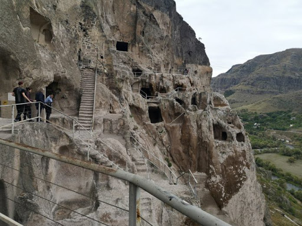
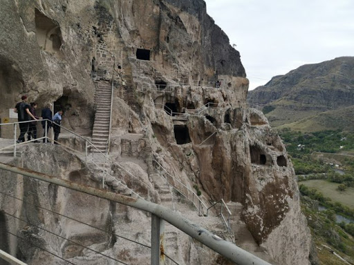

Vardzia Cave City tour Tour begins with pick up from your Kutaisi located Hotel. Head to Southern part of Georgia to discover the town-monastery of Vardzia, absolutely unique sample of rock-cut architecture. Vardzia complex is special because of the vertical arrangement of its residential quarters. It has 13 vertical levels and streches over 500 meters horizontally. Next stop Vanis qvabebi: a cave monastery is located in 30 minutes drive from Vardzia. The complex dates from 8th century and consists of a defensive wall built in 1204 and a maze of tunnels running on several levels in the side of the mountain. There are also two churches in the complex.
Afternoon we arrive at magnificent Rabati castle, built in the 9th century. The complex is unique as its architecture represents mix of Asian and European culture. Defensive walls and towers, churches and mosque, gardens and parks, all represent its role in impressive unity of various traditions. Last stop at Safara Monastery complex, 10th century monument, sheltered in a Gorge and featuring amazing views over a valley and mountains.
Have a nice trip with Travel Kutaisi